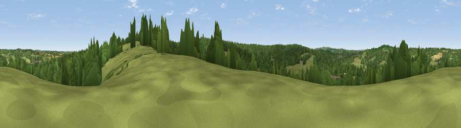

Viewpoint near Staplecross
#40677 in England · top 51% of its area beats it · near Staplecross · footpathWhere it is
The exact computed spot (TQ 77525 23875). Click the marker for map links.
Public access: a public right of way passes within 14 m of this spot. Computed from Natural England's CRoW access layer and OpenStreetMap rights of way — not the legal definitive map. Always verify locally.
The view, rendered

A 360° render of this exact spot computed from the terrain model, tree cover and land cover — summer colours, afternoon light, calibrated against photographs of famous viewpoints. Real trees, hedges and buildings will differ in detail.
The panorama
Grey silhouette: terrain skyline in each direction (720 bearings, Earth curvature and refraction included). Dashed green: skyline with trees (+15 m) and buildings (+8 m) as obstacles. Blue strip: how far the ground is visible on each bearing.
Where the view opens
Wedge length = distance to the farthest visible ground on that bearing (vegetation-aware). Rings at 10, 25 and 50 km.
What fills the view
45% grassland · 42% woodland · 11% cropland · 1% built-up
Angular shares of the visible panorama (visual magnitude), not map area. Landscape diversity 0.45 (0–1 Shannon).
Key numbers
More beautiful places nearby
The staircase of upgrades: each row has a higher view potential than everything closer. Driving times are estimates from straight-line distance, calibrated against real road routing — check an actual route before setting out.
| Place | Direction | Drive | Score |
|---|---|---|---|
| Viewpoint near Staplecross | ESE · 0 km | ~1 min | 33.2 |
| Viewpoint near Staplecross | ESE · 1 km | ~2 min | 37.4 |
| Silver Hill | WNW · 4 km | ~9 min | 39.4 |
| Viewpoint near Beckley | E · 8 km | ~16 min | 42.4 |
| Viewpoint near Netherfield | WSW · 8 km | ~16 min | 60.3 |
| Viewpoint near Telham | S · 10 km | ~19 min | 62.2 |
| Brightling Obelisk [Brightling Down] | WSW · 11 km | ~21 min | 69.1 |
| Viewpoint near Three Oaks | SSE · 12 km | ~23 min | 69.3 |
50.98690, 0.52795 · source: screening · position refined by local search. Computed location — check access rights before visiting.